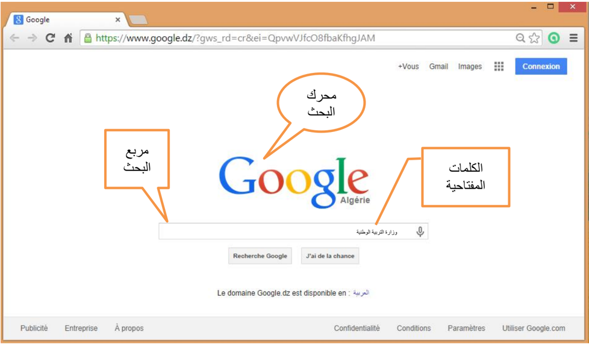
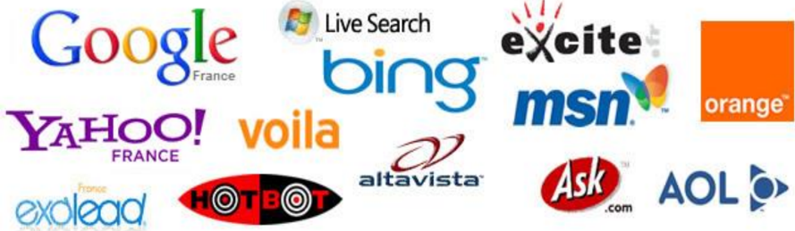

شبكة الإنترنت تربط بين الحواسيب في جميع أنحاء العالم، وتحوِّل عالمنا الكبير إلى مكان صغير مفعم بالحياة، فبإمكاننا الاتصال مع أي إنسان في جميع أنحاء العالم بشرط أن يكون متصلاً بالشبكة، وبإمكاننا القيام بالتسوق، الاستماع إلى الأخبار والموسيقى، مشاهدة الأفلام، زيارة المتاحف وحدائق الحيوانات أو أي مكان نرغب فيه.
الأسئلة التي تطرح نفسها: ما هو المتصفح وما الذي يقوم به؟
هو برنامج يسمح للمستخدم باستعراض النصوص والصور والملفات ومحتويات أخرى مختلفة، وتعرض على شكل صفحة ويب في موقع من شبكة الإنترنت أو في شبكة محلية.
النصوص والصور في صفحات الموقع يمكن أن تحتوي على روابط لصفحات أخرى في نفس الموقع أو في مواقع أخرى.
متصفح الويب يتيح للمستخدم الوصول إلى المعلومات المرغوب فيها في المواقع بسهولة وبسرعة، وهذا عن طريق تتبع الروابط.
يوجد الكثير من المتصفحات على شبكة الإنترنت، وعلى سبيل المثال لا الحصر: إنترنت إكسبلورر، موزيلا فايرفوكس، آبل سفاري، جوجل كروم، ماكستون.
موزيلا فايرفوكس
إنترنت إكسبلورر

جوجل كروم
آبل سفاري

نت سكيب

مقدمة من هدى سعود الحربي، مركز تقنية المعلومات بالإدارة العامة لتعليم البنات بالطائف
لا يوجد متصفح كامل من جميع النواحي، فمثلاً يتصف متصفح جوجل بالسرعة وعدم استهلاك الذاكرة، ويتسم متصفح فايرفوكس بالقوة والثبات، ويتسم متصفح إكسبلورر الجديد بالأمان.
توجد علاقة وطيدة بين المتصفح وتصميم وتطوير مواقع الويب، وبين المطور نفسه ومتصفحات المستخدمين، وما يحدد ويحكم العلاقة هو جمهور المستخدمين ومدى وعي وثقافة المستخدم.
يتعين على المصمم أو المطور أن يراعي دعم المتصفحات القديمة أو أن يترك رسالة للمستخدم تفيد بأنه يتوجب عليه استخدام متصفح جديد لكي يتصفح الموقع بالشكل الصحيح.
طبعاً في الآونة الأخيرة، أعلنت الكثير من المواقع العالمية مثل "يوتيوب" و"فيسبوك" عدم دعمها للمتصفحات القديمة، حيث أن عملية الدعم تتطلب جهداً كبيراً نظراً لاختلاف المعايير ولغات برمجة المواقع.
لكل موقع إنترنت تقريباً توجد بعض الصفحات التابعة له، وكمية الصفحات تتغير من موقع إلى آخر.
للتمكن من الوصول إلى كافة المعلومات في الموقع، علينا استعمال الأدوات التي يعرضها الموقع، واستعمال الارتباطات الداخلية الخاصة بالموقع، والاستعانة بشريط التوجيه.

إذا قمت بزيارة موقع وتود زيارته مرة أخرى، من المستحسن أن تقوم بحفظ عنوان الموقع في مجلد المفضلة، هكذا لن تضطر إلى طباعة عنوان الموقع من جديد في برنامج التصفح، ولن تضطر إلى البحث عن الموقع مرة أخرى، علماً أن عناوين صفحات المفضلة توجد فقط في الحاسوب الذي حُفظت عليه.
فكيف نحفظ صفحة في مجلد المفضلة (Favorites)؟ نضغط بواسطة الزر الأيسر للفأرة على قائمة المفضلة (Favoris) التي تظهر في شريط الأدوات. وعند وجود عدد كبير من الصفحات المفضلة، يكون من الصعب علينا إيجاد صفحة معينة، وعندها بإمكاننا استعمال مجلد إدارة المفضلة (Gestionnaire de favoris). في هذا المجلد بالإمكان ترتيب الصفحات المفضلة في مجلدات مصنفة.
محرك البحث (Search Engine) هو برنامج يُتيح للمُستخدِمين البحث عن كلمات محددة ضمن مصادر الإنترنت المختلفة، ويتألف محرك البحث من ثلاثة أجزاء رئيسة هي:
وظيفة البرامج المكونة لمحرك البحث:
تستخدِم محركاتُ البحث برنامج العنكبوت (Spider) لإيجاد صفحات جديدة على الويب لإضافتها، ويسمى هذا البرنامج أيضاً الزاحف (Crawler) لأنه يُبحر في الإنترنت بهدوء لزيارة صفحات الويب والاطلاع على محتوياتها، ويأخذ هذا البرنامج مؤشرات المواقع من عنوان الصفحة (Title) والكلمات المفتاحية (Keywords)، ولا تقتصر زيارة برنامج العنكبوت على الصفحة الأولى للموقع بل يتابع البرنامج تتبُّع الروابط (Links) الموجودة فيها لزيارة صفحات أخرى.
يُمثل برنامج المُفهرس (Index program) أحياناً الكتالوج (Catalogue) بقاعدة بيانات (Database) ضخمة تُوصِّف صفحات الويب، وتَعتمد في هذا التوصيف على المعلومات التي حَصَلت عليها من برنامج العنكبوت (Spider).
كما تعتمد على بعض المعايير مثل الكلمات الأكثر تكراراً من غيرها، وتختلف محركات البحث عن بعضها في هذه المعايير، إضافة إلى اختلافها في خوارزميات الترتيب (Ranking algorithms).
يبدأ دور برنامج محرك البحث (Search Engine Program) عند كتابة كلمة مفتاحية (Keyword) في مربع البحث (Search Box).
يأخذ هذا البرنامج الكلمة المفتاحية ويبحث عن صفحات الويب التي تحقق الاستعلام الذي كوَّنه برنامج المُفهرس في قاعدة بيانات الفهرس (Index Database)، ثم تُعرَض نتيجة البحث المتمثلة بصفحات الويب التي طلبها المُستخدِم في نافذة المُستعرض (Browser Window).

يوجد عدد كبير من محركات البحث التي تنتشر على الويب، نذكر منها على سبيل المثال لا الحصر:

ياهو (Yahoo)، جوجل (Google)، ليكوس (Lycos)، ألتا فيستا (AltaVista)، إكسايت (Excite)، نيت سكيب (Netscape)
تختلف محركات البحث عن بعضها البعض في أسلوب العمل، فمثلاً: تحتفظ قاعدة بيانات ألتا فيستا (AltaVista) بكل تفاصيل صفحة الويب المخزنة، أما غيرها من آليات البحث الأخرى فقد يحتفظ بالعناوين الرئيسية للصفحة فقط، مما يؤدي إلى اختلاف في نتائج البحث الظاهرة للمُستخدم.
إن محركات البحث تستخدم في بحثها عن مواقع الويب ما يدعى الكلمات المفتاحية (Keywords - Mots clés) التي يمكن أن تكون كلمة أو عبارة (Phrase)، وتستخدِم آلياتُ البحث عادةً بعض المعاملات (Operators - Opérateurs) مع هذه الكلمات المفتاحية، لتوفير خيارات إضافية لعملية البحث.
هي عبارة عن مواقع على الإنترنت يمكن البحث فيها عن المعلومات، حيث تقوم بفهرسة وتصنيف المعلومات ضمن بنية هرمية متدرجة ومتشعبة تبدأ بالمفتاح الأساسي العام للمعلومات ثم يتدرج إلى الموضوعات الأكثر تخصصاً.
يقوم بعملية التصنيف هذه طاقم بشري، حيث يقوم بتتبع مواقع نشر المعلومات وفهرستها حسب موضوعاتها وأماكن نشرها وتسجيل ملخصات لمحتوياتها.
تتميز أدلة البحث بدقتها العالية في تصنيف المعلومات واستعراض أدلة الموضوعات. يعيبها عدم تغطيتها كامل محتويات مواقع الإنترنت لاعتمادها على التحديث اليدوي.
هذه الطريقة التاريخية للفهرسة مفيدة لفهم تطور الويب، لكنها لا تكفي للبحث اليوم. استخدم محرك بحث حديثاً، واكتب كلمات مفتاحية دقيقة، ثم تحقق من اسم الجهة الناشرة وتاريخ النشر قبل اعتماد أي معلومة في واجب مدرسي.
مورد داعم للأستاذ: صفحة «موارد موثوقة للتعلم والتدريس» في البوابة تجمع مراجع حديثة للبحث الآمن والخصوصية.


وقد ظهر أثر ذلك في محركات البحث الموجودة، التي انقسمت إلى مجموعتين:
قلَّدت هذه المجموعة محركات البحث الإنجليزية، ولذلك فقد جاءت نتائجها ضعيفة لاعتمادها في البحث على المطابقة الحرفية (String matching) لكلمات البحث، مما يتسبب في حجب الكثير من المعلومات التي تتوافق مع الكلمات المراد البحث عنها (والتي قد تختلف بأحرف زائدة بسيطة).
تعتمد هذه المجموعة من محركات البحث على تقنيات متقدمة لمعالجة اللغة العربية، ومن أبرز الأمثلة عليها: أراب فيستا (Arabvista) والإدريسي، الذي أصدرته شركة صخر لبرامج الحاسب الآلي. تتميز المجموعة الثانية بأدوات ووظائف إضافية مثل: البحث باللواصق، والبحث بالمشتقات.